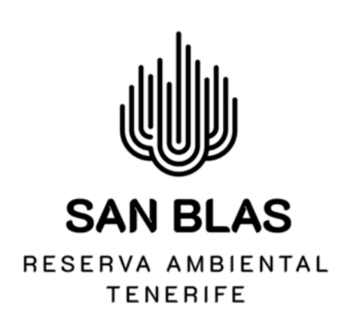

San Blas Reserva Ambiental · Barceló Tenerife
Leer Canarias en un paisaje
Entre un 33 % y un 45 % de descuento por alojarse en Barceló Tenerife.
Plazas limitadas. Reserve con antelación.

San Blas Reserva Ambiental · Barceló Tenerife
Entre un 33 % y un 45 % de descuento por alojarse en Barceló Tenerife.
Plazas limitadas. Reserve con antelación.